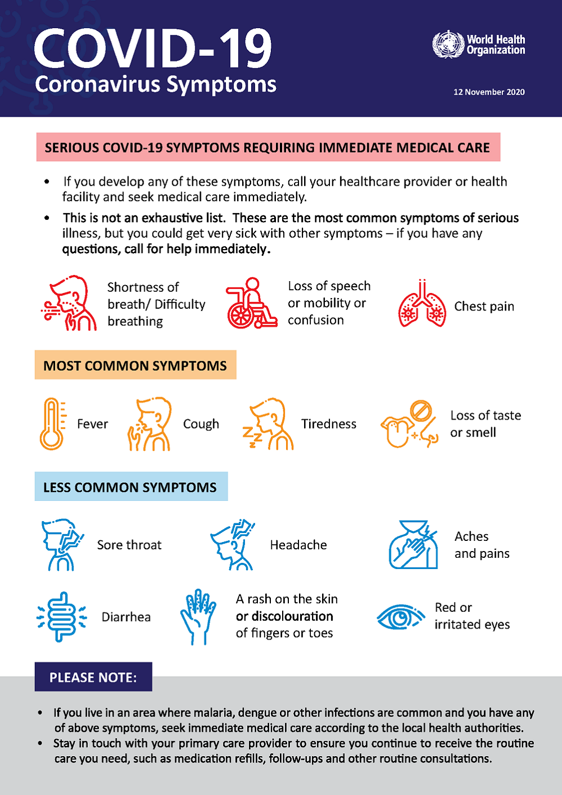
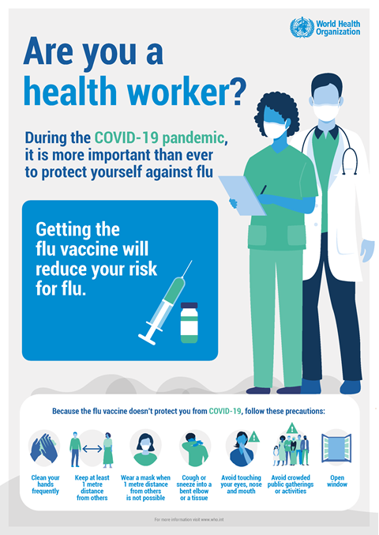

How to make your environment safer
Avoid the 3Cs: spaces that are closed, crowded or involve close contact. Outbreaks have been reported in restaurants, choir practices, fitness classes, nightclubs, offices and places of worship where people have gathered, often in crowded indoor settings where they talk loudly, shout, breathe heavily or sing. The risks of getting COVID-19 are higher in crowded and inadequately ventilated spaces where infected people spend long periods of time together in close proximity. These environments are where the virus appears to spread by respiratory droplets or aerosols more efficiently, so taking precautions is even more important. Meet people outside. Outdoor gatherings are safer than indoor ones, particularly if indoor spaces are small and without outdoor air coming in. For more information on how to hold events like family gatherings, children’s football games and family occasions, read our Q&A; on small public gatherings. Avoid crowded or indoor settings but if you can’t, then take precautions: Open a window. Increase the amount of ‘natural ventilation’ when indoors. WHO has published Q &A; on ventilation and air conditioning for both the general public and people who manage public spaces and buildings. Wear a maskli>Dont forget the basics of hyginene
Regularly and thoroughly clean your hands with an alcohol-based hand rub or wash them with soap and water. This eliminates germs including viruses that may be on your hands. Avoid touching your eyes, nose and mouth. Hands touch many surfaces and can pick up viruses. Once contaminated, hands can transfer the virus to your eyes, nose or mouth. From there, the virus can enter your body and infect you. Cover your mouth and nose with your bent elbow or tissue when you cough or sneeze. Then dispose of the used tissue immediately into a closed bin and wash your hands. By following good ‘respiratory hygiene’, you protect the people around you from viruses, which cause colds, flu and COVID-19. Clean and disinfect surfaces frequently especially those which are regularly touched, such as door handles, faucets and phone screens.What to do if you feel unwell
Know the full range of symptoms of COVID-19. The most common symptoms of COVID-19 are fever, dry cough, and tiredness. Other symptoms that are less common and may affect some patients include loss of taste or smell, aches and pains, headache, sore throat, nasal congestion, red eyes, diarrhoea, or a skin rash. Stay home and self-isolate even if you have minor symptoms such as cough, headache, mild fever, until you recover. Call your health care provider or hotline for advice. Have someone bring you supplies. If you need to leave your house or have someone near you, wear a medical mask to avoid infecting others. If you have a fever, cough and difficulty breathing, seek medical attention immediately. Call by telephone first, if you can and follow the directions of your local health authority. Keep up to date on the latest information from trusted sources, such as WHO or your local and national health authorities. Local and national authorities and public health units are best placed to advise on what people in your area should be doing to protect themselves.